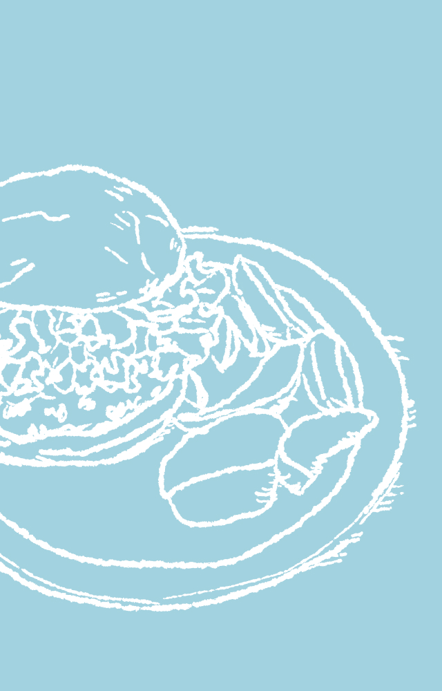
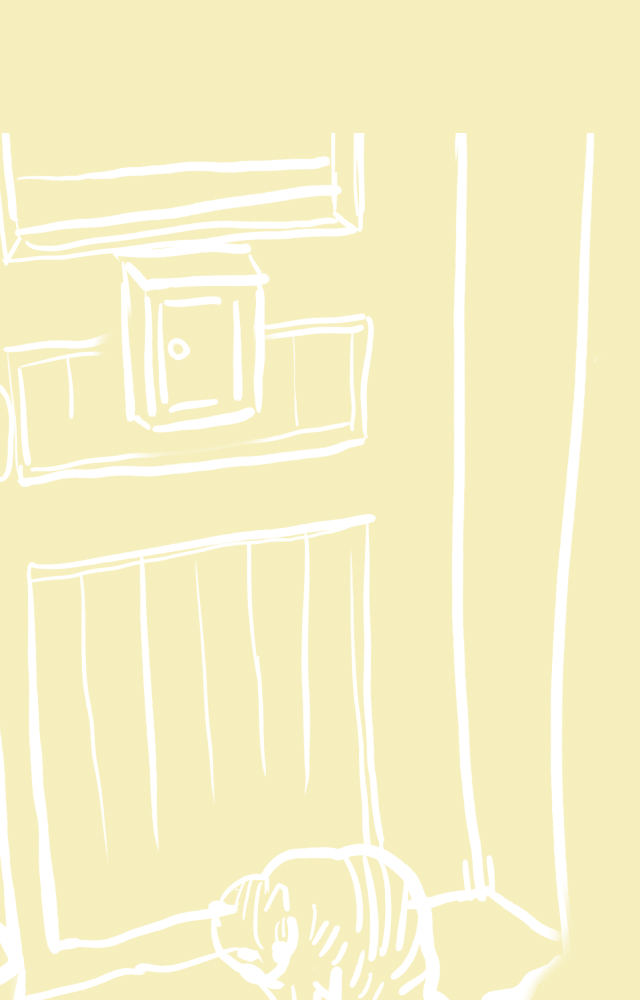

NAMAYU88 PORTFOLIO
できること
HTML / CSSコーディング 業務効率化ツール HANDMADE
HTML/CSSコーディング、WordPress編集、VBA・Pythonによる業務効率化ツール制作などを行っています。 デザインだけでなく、実際に動く形に仕上げることを意識して制作しています。
作品を見る


HTML / CSSコーディング 業務効率化ツール HANDMADE
HTML/CSSコーディング、WordPress編集、VBA・Pythonによる業務効率化ツール制作などを行っています。 デザインだけでなく、実際に動く形に仕上げることを意識して制作しています。